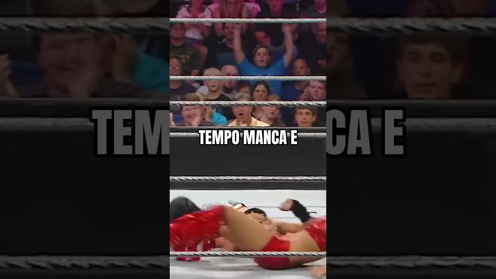

Perché gli arbitri del wrestling non vedono mai niente?
L'arbitro distratto è parte dello spettacolo. Ma dietro c'è un lavoro vero: l'auricolare con il backstage, i tempi del match e il segnale della X quando un infortunio è reale.
Perché l'arbitro nel wrestling non vede mai niente? Semplice: fa parte dello spettacolo.
È la domanda del mio short qui sopra. Ma dietro quell'arbitro "distratto" c'è uno dei lavori più difficili del wrestling. Ve lo spiego.
Perché l'arbitro non vede niente: la regola della storia
Nella finzione del wrestling l'arbitro può punire solo quello che vede con i propri occhi. Non c'è il VAR, non c'è il replay.
E allora il trucco è sempre lo stesso. Il cattivo distrae l'arbitro, oppure l'arbitro si prende una botta e finisce KO, il famoso "ref bump". In quei secondi succede di tutto: la sedia, il colpo basso, l'intervento dell'amico.
Se vedesse tutto, i cattivi non potrebbero mai barare. E senza i cattivi che barano, metà delle storie più belle non esisterebbero.
Certo, a volte esagerano. Arbitri che restano svenuti tre minuti per una spallata. Ma è il prezzo da pagare per far odiare l'heel.
L'auricolare: il collegamento con il backstage
Ed ecco la parte che tanti non sanno. Gli arbitri hanno un auricolare wireless. Dal backstage gli parlano durante il match.
Cosa gli dicono? Quanto tempo manca, quando deve chiudere, quando parte la pubblicità nelle dirette. Se lo show è in ritardo, l'ordine può essere di accorciare. E l'arbitro lo passa ai wrestler, magari sussurrando durante una presa a terra.
Un ex arbitro WWE, Jim Korderas, l'ha detto benissimo: il lavoro dell'arbitro è aiutare i wrestler a raccontare la storia, restando invisibile.
La X con le braccia: quando il dolore è vero
L'altra cosa importante. Se un wrestler si fa male davvero, è l'arbitro che fa la X con le braccia sopra la testa.
È un allarme: lo staff medico corre, il backstage cambia i piani e il match spesso si chiude prima. Una X davanti al petto, invece, è un avvertimento più leggero: il wrestler forse è ferito, ma può andare avanti.
In passato la X è stata usata anche per infortuni finti, dentro le storie. Oggi in WWE molto meno. E dopo un episodio in AEW gli arbitri possono anche comunicare via radio con i medici e fermare il match direttamente.
Gli eroi silenziosi del ring
Io gli arbitri li rispetto tantissimo. Contano a terra, prendono botte, tengono il tempo, controllano che nessuno si faccia male, e devono farlo senza farsi notare. Quando un match funziona, nessuno si ricorda dell'arbitro. Ed è proprio quello il segno che ha lavorato bene.
E nel podcast The Showcase ho parlato anche con chi il wrestling lo vive da dentro: se volete capire come si diventa wrestler, leggete il seminario di King Danza.
Lo sapevi?
Scrivimelo nei commenti dello short e iscriviti al canale Tony Wrestling. Altre curiosità le trovi nella rubrica Lo sapevi che e tra i miei Shorts. E se vuoi vedere gli arbitri all'opera ogni settimana, ecco dove vedere la WWE in Italia.
Fonti:
- Short: Perché gli arbitri non vedono mai niente? (Tony Wrestling)
- Referee (professional wrestling)), Wikipedia (auricolari, regole della finzione, segnale della X, citazione di Jim Korderas)
- What does the secret signal X mean in wrestling?, Wrestling Inc
- The secret signals in wrestling explained, Wrestling Inc
Domande frequenti
Gli arbitri del wrestling hanno un auricolare?
Sì. Gli arbitri indossano auricolari wireless con cui il backstage comunica durante il match, per esempio quanto tempo resta e quando ci sono le pause pubblicitarie nelle dirette.
Cosa vuol dire quando l'arbitro fa la X con le braccia?
Le braccia incrociate sopra la testa segnalano che un wrestler si è fatto male davvero. È l'allarme per lo staff medico e per il backstage. Una X davanti al petto è invece un avvertimento più leggero.
Perché l'arbitro viene sempre distratto?
Perché nella finzione l'arbitro può punire solo quello che vede con i suoi occhi. Distrarlo o metterlo KO è il modo classico per far barare il cattivo o far intervenire qualcuno senza squalifica.